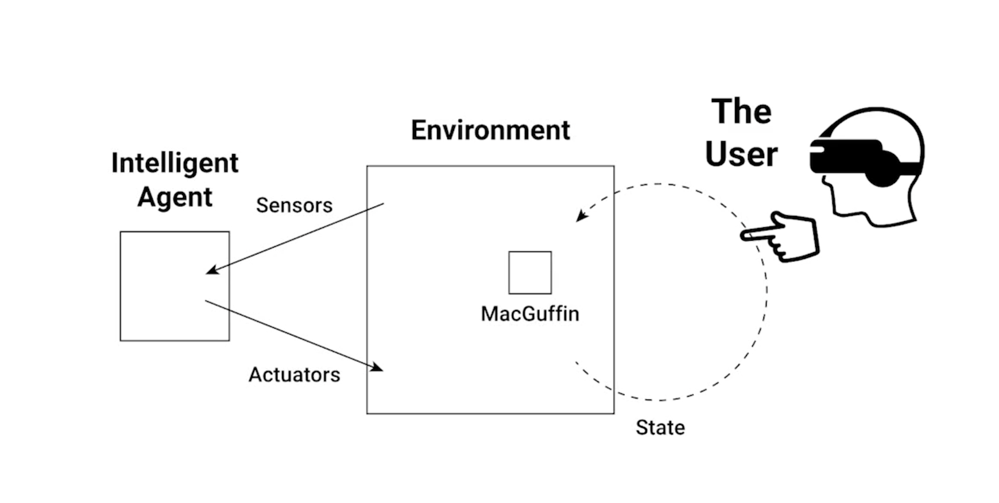
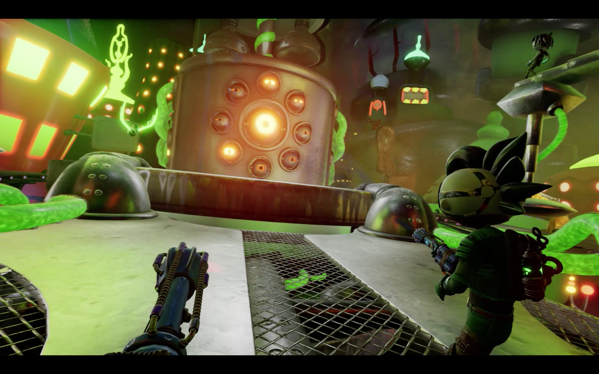

WHY
The body of work surrounding alternate reality technology in entertainment is far smaller than its uses in what are considered practical spaces, such as medicine and healthcare.
With the newness of the technology, the planned and fast obsolescence of hardware, and the trouble seen keeping records in both entertainment, and alternate reality, adding a new record while exploring the affordances of the medium was key.
HOW
To study entertinament as a whole was too broad. Thus, I picked a smaller sphere of relevance: Science Fiction.
Science fiction contains a great deal of popular culture, is prolific, and many high-earning entertainment productions fall into this category. Because of this, it is reasonable to assume there would be further growth in science-fiction (making it relevant to the future) and there was a good mix of independant and large scale media productions to reference.
WHAT
Novum is a two-user AR experience. Built using ARCore, it makes use of augmented reality and the PubNub API to have both user's play experiences affect one another.
Based on the story The Aliens, Novum strives to answer the question“what impact will participatory, group oriented science-fiction experiences have on entertainment media?”
Context Review
Theoretical Work
Darko Suvin - On the Poetics of the Science Fiction Genre
Darko Suvin wrote about what science fiction really was, as a genre. Despite the broadness of the genre, and the variety of sub-genres it encompasses, Suvin makes an attempt to come up with an all-encompassing definition for science fiction works that was inclusive of all materials coming under the umbrella. He coins two terms in relation to science-fiction; cognitive estrangement, and novum, the latter being a Latin term meaning ‘new thing’.
To do a study of anything, it’s important to be able to define what it is your work encompasses. While developing Novum, I needed a definition of science fiction that I could use to determine what would and wouldn’t apply to my work. Thus, my definition of science fiction is based off of his work, and I decided to define it as “any body of work that embodies the idea of 'novum' as a major concept in its identity.” Secondly, my thesis is named Novum in homage to his writing.
Science Fiction: Adam Charles Roberts
: This book is a literary criticism of the science fiction genre. Exploring the history of sci-fi, he talks about the ‘encounter with difference’, much the same as Suvin uses the term novum. He speaks to the history of science fiction, before bringing up a few social and technological points that require discussion (gender, race and technology) and how each is represented.
Why is this important: Science fiction is neither apolitical, or free of bias. Understanding representation in the genre, and advancements through history, can help pave the way for diversity in fiction. It’s specifically important to Novum in regards to the handling of issues like xenophobia, and also with de-gendering the language used so that it is both respectful and accessible in content.
To learn more, another interesting work along these lines is Introduction: Science Fiction and Biopolitics by Sherryl Vint.
Melanie Green and Timothy Brock - The Role of Transportation in the Persuasiveness of Public Narratives
Transportation theory covers the concept of how immersed someone is in the story they’re engaging with. This is based off of three main points of immersion: emotional reactions, mental imagery, and a loss of access to real-world information. This happens regardless of work quality, and is based solely on user engagement.
VR, AR, and other alternate reality experiences already tick one of the boxes. The nature of the storytelling medium has a loss of real world access for the user, more so than related mediums (like video games) provide. Like other visual mediums, it also helps augment a person’s mental imagery. That leaves the emotional reactions – the maker behind the project can focus on this aspect, since the other two are already covered by the medium choice.
Mel Slater - Immersion and the Illusion of Presence in Virtual Reality
While Melanie and Timothy speak about storytelling immersion, Mel speaks about immersion and player presence specifically in VR. Some of the points she considered to be important for immersion are a higher level immersive system, such as a wide field-of-view, high-resolution, stereo, head-tracked head-mounted displays, real-time motion capture, and auditory and haptic feedback.
Why is this important: As AR and VR are closely related fields, and many of these points are applicable to both. High resolution screens, as well as auditory, haptic, and other tactile feedback are important in a medium that is embedding digital artifacts into a physical space.
Pietro Gagliano - Agence
Agence is a discussion of changing authorship in stories as technology advances. He discusses the concept of three way authorship, between the original author, the participant, and an AI.
While there is no A.I. in Novum, it is important to consider the dual authorship that comes in any format of interactive entertainment. . Research wise, seeing how entertainment becomes less linear, like movies, and more flexible to suit each user will see impact in the future.
Created Work
THE VOID - Step Beyond Reality
This company creates what they call ‘hyper-reality’ experiences. They make full body, immersive VR experiences, mainly set in established intellectual properties, such as Star Wars. They also have one experience that is based on their own original property, called Nicodemus: Demon of Evanishment.

They’re an established company that does site specific VR very well. This implies there is a sustainable market for this type of experience, and a shift from games as a product to games as a service. Secondly, studying how they’ve structured their experiences informed how I could build mine. They keep to short experiences that guide the viewer without making it feel like they’re railroaded in, and make good use of a tactile environment, even in a VR space.
Holojam In Wonderland: Immersive Mixed Reality
Holojam in Wonderland is a an immersive, mixed reality theater performance telling the tale of Alice in Wonderland. They have the audience become participants in the virtual performance space, and have real actors perform inside of the virtual world as well.
Like Novum, Holojam is more a story than a full on game for the audience. And while they are in VR, my work is in AR, which makes the two a good comparative piece. As well, while Novum inhabits the science-fiction space, Holojam in Wonderland inhabits the fantasy genre.
Scary Girl
Scary Girl is a free-roam multi-user experience developed by Dark Slope. They’ve focused on building a site-specific virtual reality experience, and they also plan to make future AR and VR titles.
As I had a hand in working on this project in collaboration with the Dark Slope team, it gave me a great deal of insight into participant pathing and how to guide someone through the space. It also was informative, as Dark Slope’s work inhabits a similar space to Novum, and being able to study how they integrated the space, and tactility of the game fed into my own research.
Rollin Bishop: The Dream of DisneyQuest Is Dead
The Dream of DisneyQuest Is Dead is an article talking about the now abandoned DisneyQuest experience. Rollin speaks about what DisneyQuest was, and what became of it after its downfall.
:format(webp):no_upscale()/cdn.vox-cdn.com/uploads/chorus_asset/file/13133891/DQ_BuzzBlaster_copy.jpg)
The importance comes not from the article, but from the artifact of DisneyQuest. It was pioneering a lot of technology for the time, and the history of virtual reality experiences gives a good timeline for progression. This can provide a basis for examining how alternate reality experiences may look in the future. Secondly, it poses as a warning as well. With how quickly technology becomes obsolete, and the poor practices surrounding preservation in games, it’s clear that creating a repository of work could prove to be problematic. With DisneyQuest itself having sold off or abandoned much of its tech, as well as the lack of preservation of the experiences themselves, there is little record of it to keep it for knowledge for the future. It will be an important consideration to make sure that proper preservation techniques are put into place.